Another train ride north to Ernakulam and then a ferry over to Cochin. Called the 'Queen of the Arabian Sea', Cochin (Kochi) was an important spice trading centre on the west coast of India from the 14th century onward, and maintained a trade network with Arab merchants from the pre-Islamic era. Occupied by the Portuguese in 1503, it was the first of the European colonies in colonial India. It remained the main seat of Portuguese India until 1530, when Goa was chosen instead.
The most evocative view in Cochin are the 'Chinese Nets' which are fixed land installations with a net which is cantilevered with rocks. This way of fishing is unique to the area, as it was introduced by Chinese explorers who landed there in the 14th century. Indeed, one interpretation of the city name Kochi is ‘co-chin', meaning ‘like China'.. !
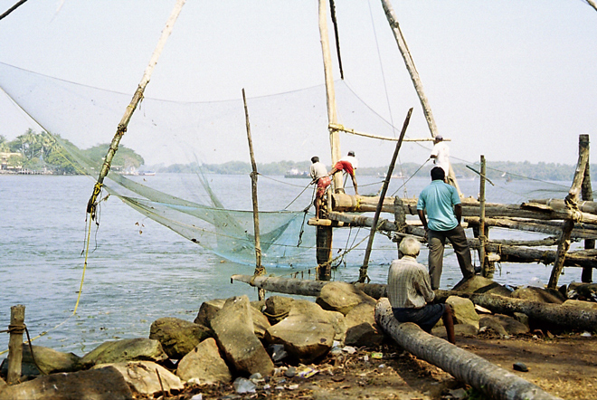
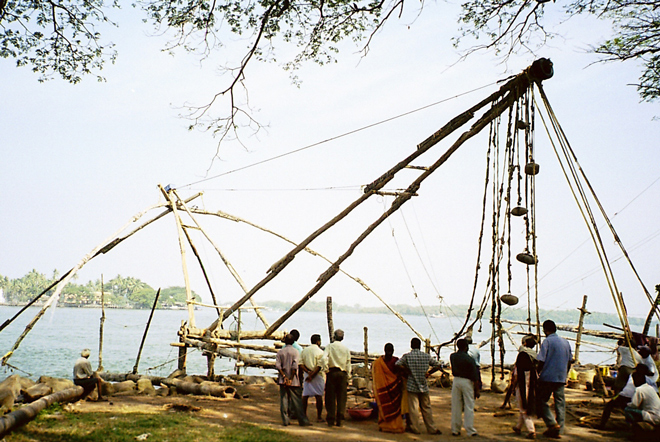
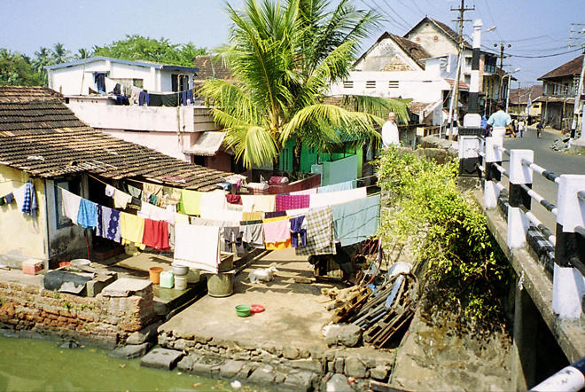
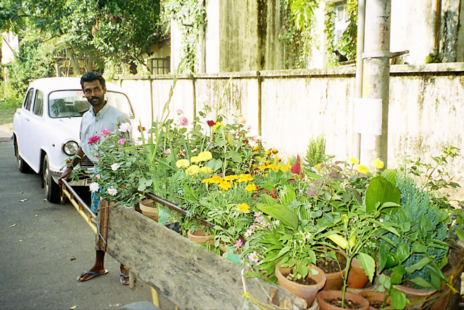
Kathakali is a Hindu performance art in the Malayalam-speaking region of Kerala. It is one of the major forms of classical Indian dance: a "story play" genre of art, but one distinguished by the elaborately colourful make-up, costumes and facemasks that the traditionally male actor-dancers wear. Kathakali's roots are unclear: the fully developed style of Kathakali originated around the 17th century, but its roots are in the temple and folk arts which are traceable to at least the 1st millennium AD.
A Kathakali performance, like all classical dance arts of India, synthesises music, vocal performers, choreography and hand and facial gestures together to express ideas. However, Kathakali differs in that it also incorporates movements from ancient Indian martial arts and athletic traditions of South India.. !
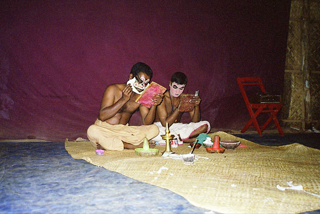
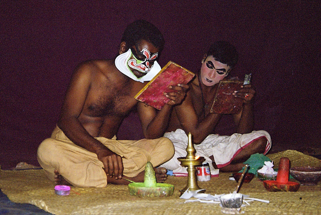
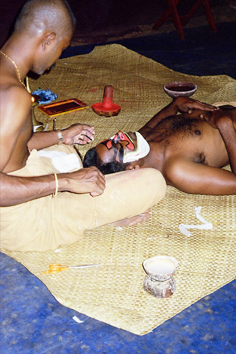
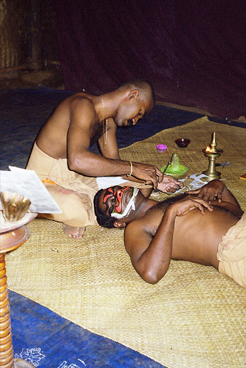
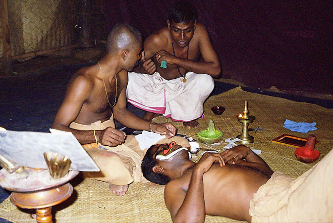
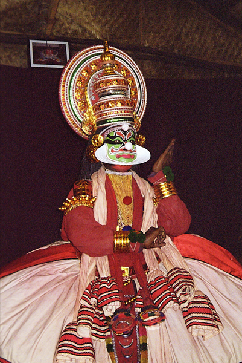
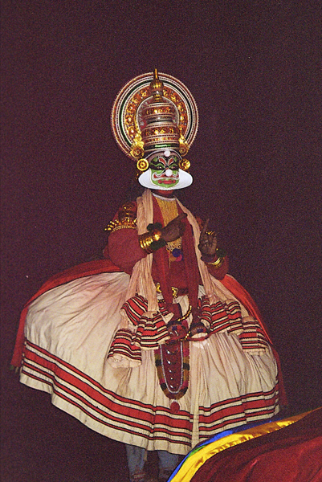
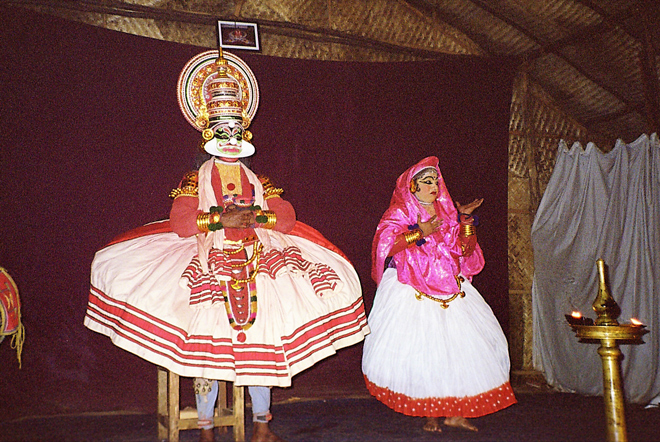
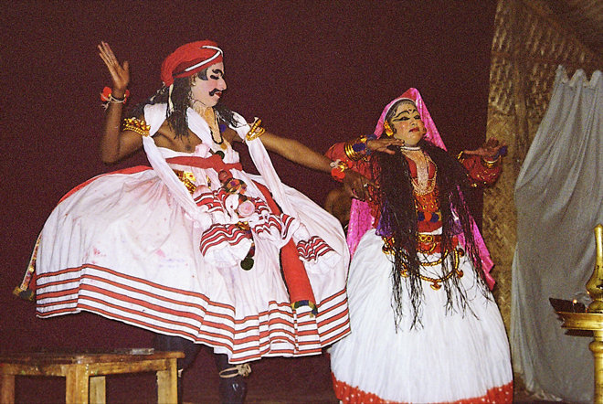
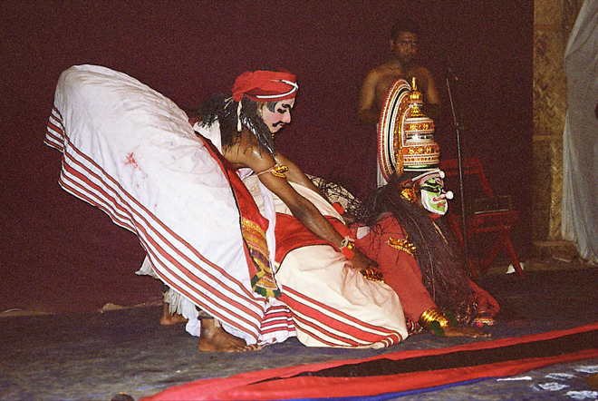
Constructed in 1567, the Paradesi Synagogue is the oldest active synagogue in the Commonwealth of Nations and is one of seven synagogues of the Malabar Yehudan Jewish community. Paradesi is a word used in several Indian languages, and the literal meaning of the term is "foreigners" applied to the synagogue because it was built by Sephardic or Spanish-speaking Jews, some of them from families exiled in Aleppo, Safed and other West Asian localities.
Its treasures include Belgian glass chandeliers, a brass-railed pulpit, the 10th-century copper plates of privileges given to Joseph Rabban (the earliest known Cochin Jew) and the floor of the synagogue is composed of hundreds of Chinese 18th-century, hand-painted porcelain tiles, each of which is unique and which featured in Salman Rushdie's novel The Moor's Last Sigh.
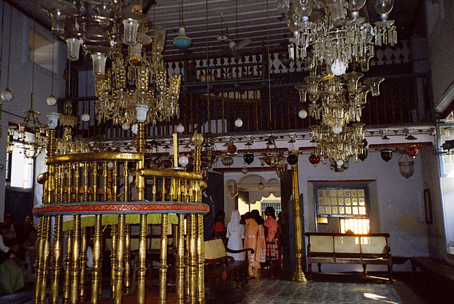
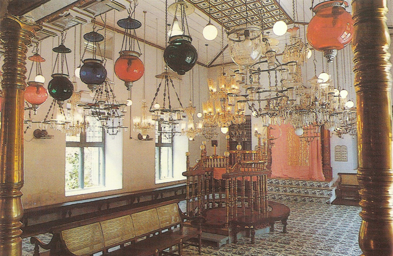
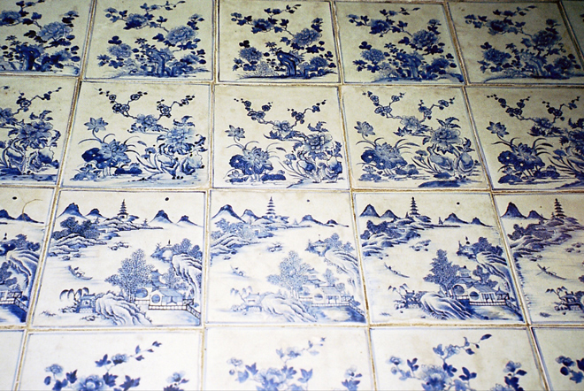
The spice trading history of Cochin is still very apparent in the town today. Here we met some girls whose father was a nut trader.
Also shown are some street scenes including one of a builder with rudimentary bamboo scaffolding and our delightful guest house where we stayed for several nights. !
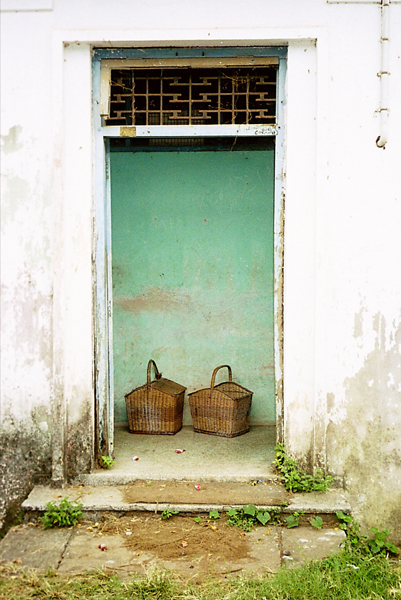
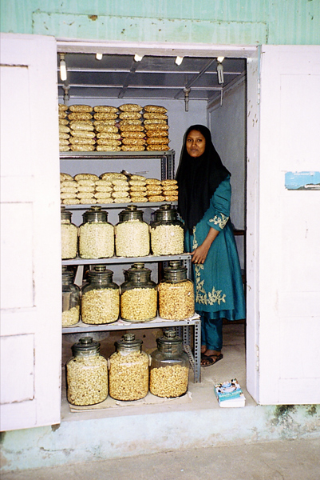
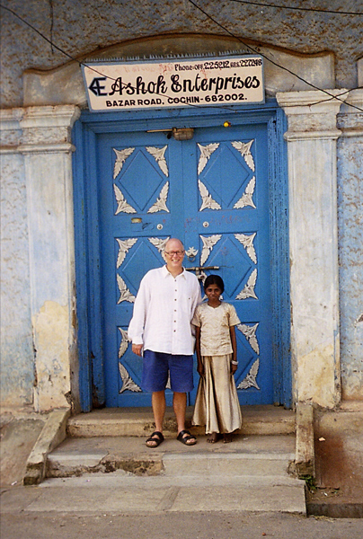
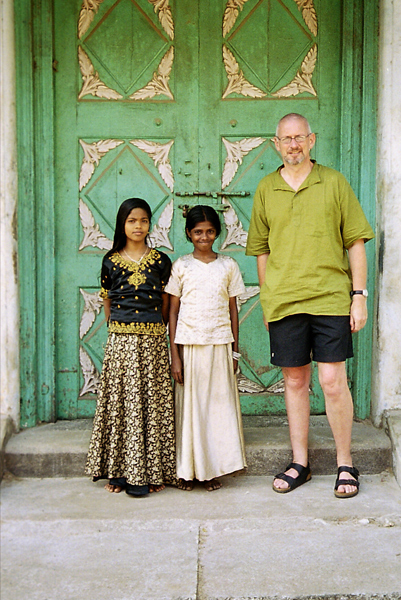
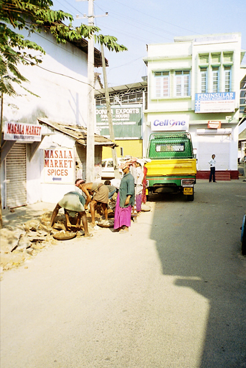
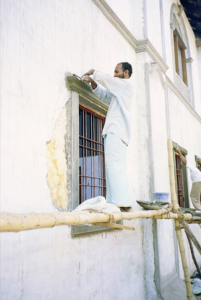
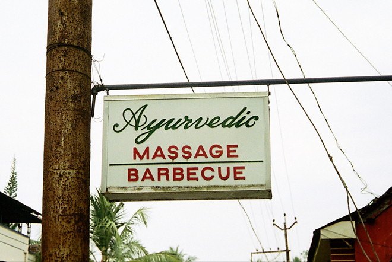
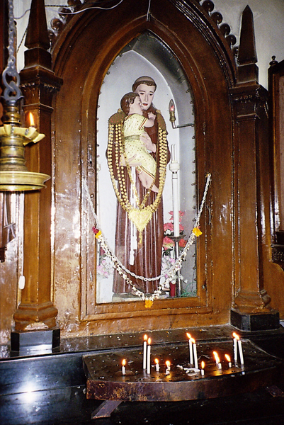
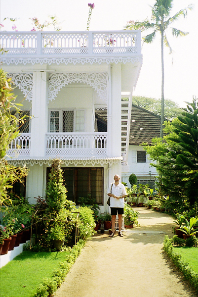